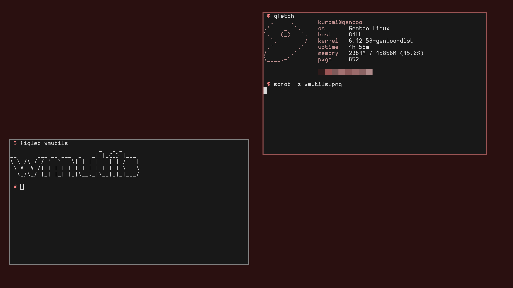

What is wmutils?
2026-08-01
I always was minilist person. I dreamed about minimal editor, minimal wm, which are only include things i need.
Finally, my dream setup is almost done.

I wont describe anything about wmutils here, z3bra have done this before me. Here is the link to z3bra`s post